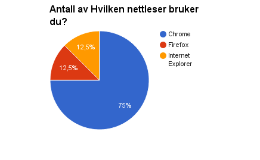
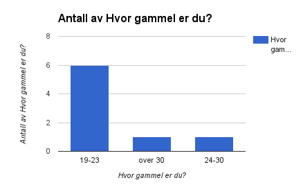
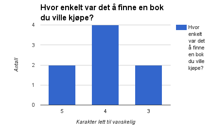
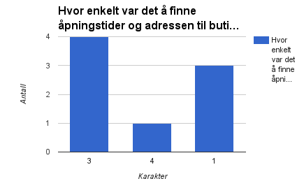
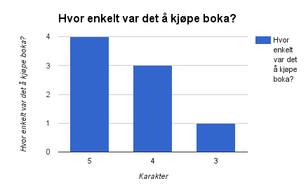

Vår klient
- Klientnavn: Sem CEO
- Kontaktperson: Hung
Vår klient er en en liten bokhandel som heter "Noahs Papir". Det er en liten bokhandel holder til i Flodenveien 69 i Oslo. "Noahs Papir" er en familiebedrift som ble startet av Noah i 1978 som en aviskiosk. Noah gjorde senere butikken om til en bokhandel i 1999. Butikken ble arvet av sønnen, Sem, etter at Noah ble pensjonert i 2008. Våren 2015 kjøpte Sem opp nabotomten og utvidet butikken.
Tester
Vi har gjennomført tre typer tester. En kvantitativ og en kalitativ undersøkelse, hvor den første ble gjennomført ved hjelp av Google form. Og den kvalitative ble gjennomført ved samtale med tre mulige kunder. Den sisste testen er en scenario test hvor en ser at gitte deler av siden fungerer som den skal. Dette gjelder særlig javascript implementasjonene.
Innhold i undersøkelsen
Undersøkelsen fokuserer på to hovedpunkter. Det ene er hvilke nettleser testeren brukte, alder og kjønn. På denne måten kan vi se om det var noen brukergrupper som skilte seg ut med tanke på hvor bra de syntes siden var. Det andre testen fokuserer på var hvor godt brukeren opplevde nettsiden. Enten som rotete, oversiktlig eller praktisk. Den kvalitative undersøkelsen fokuserte på å avsløre helt konkret hva som førte til forvirring på siden eller andre forbedringspotensialer.
Kvalitativ undersøkelse
Etter samtale med tre forskjellige testere har vi fått noen
tilbakemeldinger på hva som framstod som oversiktlig og/eller
forvirrende. Vi stilte også noen spørsmål om estetikken til
siden. Alle tre var felles medstudenter.
Det som fikk størst fokus hos alle tre var at handlekurven
manglet flere funksjoner. Dette var muligheten til å fjerne ett
element og se hvor mange bøker en hadde kjøpt av en type.
Posisjonen var to av tre testere heller ikke fornøyd med.
Menyen ble også nevnt når vi stilte spørsmål om hva som var
forvirrende. Det var særlig det at noen knapper ikke ga noen
respons. Et eksempel er "Bøker" i menyen. Denne åpner kun en
liste med kategorier, men linker ikke selv til en side.
Brukeren så ut til å tro at nettsiden var treg og ventet på en
respons.
Fargevalget var de fornøyde med og det å finne bøker og finne
informasjon om Noah synes de var lett.
Kvantitativ undersøkelse
Målgruppe/publikum
Som vi kan se var__ % studenter. Dette passer bra med tanke på at siden vår også målretter seg mot studenter. Fordi det er stor pågang av tester fra flere fag på NTNU kan vi se antydninger til at folk er lei av å svare på undersøkelser. Dette kan føre til at testerne går for fort gjennom testene og færre testere. Derfor har samtalene vi har hatt i den kvalitative testen vært spesielt viktige.
Nettleser
Fordi opperativsystem har lite å si for hvodan nettsiden vises(med unntak av plattformspesefikke nettlesere) har vi valgt å utelate dette fra undersøkelsen vår. Istedet har vi fokusert på hvilke nettleser som er brukt. Vi kan se at de fleste bruker Google Chrome. Dette ser vi på som posetivt siden vi har brukt denne mye i intern testing av siden. Det kan være lurt å merke seg at ikke alle funksjonene til siden er tilgjengelig om en har siden lokalt og bruker Chrome. Det er fordi Chrome slår av cookies når siden ligger lokalt.
Alder
Som en kan se av fig.2 er de fleste i alderen mellom 19 og 23. Dette passer med den målgruppen vi hadde sett for oss ved starten av prosjektet. Hvis en ser disse dataene i sammenheng med svarene til de litt eldre, på hvor enkelt det var å finne en bok en hadde lyst på. Ser vi at de yngre hadde en bedre brukeropplevelse av siden. En litt uheldig tendens i undersøkelsen vår var den store overvekten av menn. Med kun 25% kvinner i undersøkelsen hadde det vært gunstig om de hadde vær likt representert.
Oversiktlighet
Når vi skulle prøve å måle hvor overiktlig siden vår spurte vi testeren: Hvor enkelt var det å finne en bok du ville kjøpe?(fig. 1) og, Hvor enkelt var det å finne åpningstider og adressen til butikken?(fig. 4) Svarene avslørte at det var svært vanskelig å finne åpningstidene til butikken. Vi fikk også en tekstlig tilbakemelding, "hvor er åpningstidene??". Endringer gjort på bakrunn av denne tilbakemeldingen kan en lese om i Endringer på bakrunn av tilbakemeldinger

Brukbarhet
Vi ba også testeren om å kjøpe en bok og gi tilbakemelding på hvor enkelt dette var se fig 5. Som vi kan se var dette en ganske enkel oppgave. Men vi har også fått noen middels tilbakemeldinger. Dette kan være fordi noen ikke helt visste hvor stort/lite "scopet" til denne oppgaven var og ikke helt skjønte når en hadde "kjøpt" bøkene.
Scenariotester
| Test | Beskrivelse | Ønsket Resultat | Resultat | Kommentar |
|---|---|---|---|---|
| Bestille en bok | Brukeren skal kunne trykke på "kjøp" knappen under en bok og kjøpe den. Kjøpet skal lagres i en "cookie" | Boken skal dukke opp i handlevognen | Dette fungerte | Plasseringen av handlevognen kunne vært bedre |
| Fjerne alle bestillinger | Brukeren skal kunne fjærne alle bøkene i handlevognen ved å trykke på "fjern alle" | Handlevognen skal bli tømt | Fungerer | Vær oppmerksom på at chrome ikke lagrer "cookies" når filen ligger lokalt på maskinen |
| Lese FAQ | Brukeren skal kunne lese FAQ ved å klikke på "les svar" | Mer tekst skal dukke opp under spørsmålet | Fungerer | Kunne kanskje hatt en animasjon? |
| Se bildestrøm | Brukeren skal kunne se en bildestrøm | bildene skal bytte i et passende tempo og piler skal gjøre det mulig å bla igjennom bildene | Fungerer | Ingen |
| Forstørre bilder | Bruker skal kunne forstørre bilder | Når en trykker på bilde skal det bli større | Fungerer | Ingen |
Endringer på bakrunn av tilbakemeldinger
Vi rekker ikke å endre på alle delene av siden vi har fått negative kommentarer på i undersøkelsene.
Men vi har prioritert noen. De vi ikke har rukket å implementere kan en lese om i handlingsplanen.
Som nevnt var frusterasjonen stor over ikke å ha muligheten til å slette enkeltelementer i handlelisten.
Dette er nå rettet opp i og mulighet til å slette en og en bok er nå implementert.
Tilbakemeldinger ga inntrykk av at det var vanskelig å
finne åpningstider. Vi valgte derfor å plassere
åpningstidene i bunnteksten. Herifra vil de være synlig fra
alle sidene.
Handlingsplan
Basert på tilbakemeldingene vi har fått har vi samlet noen punkter som har forbedringspotensial på siden vår. Vi vil også komme med noen konkrete
forslag til endringer på siden.
Skriv her --
Refleksjon
Hva gikk bra
Vi fikk fort ideer om mange sider og kom fort i gang(kanskje for fort). Tidsperspektivet på hele prosjektet som helhet var bra, nok tid. Gruppen har hele tiden hatt god oversikt over hva som har vært mulig og realistisk å få til i tidsrammen til prosjektet.
Hva kunne gått bedre
Vi sløvet noe med designfasen, noe vi var nødt til å bruke mye tid på senere igjen.
Til neste gang vil det være et mål å ha en enda mer nøyaktig beskrivelse av designet på siden.
Dette gjorde at vi tapte mye tid senere i prosjektet. Spesielt var det forvirrende med et hav av
div-er som gjorde siden svært uoversiktlig. Kanskje var ikke problemet at planen var for grov, men
heller at vi endret på hvordan vi ønsket at siden skulle se ut ettsom ferdigheter i html og css økte.
Css-en kunne hatt bedre struktur under utviklingen. Denne filen har vært spesielt rotete og uoversiktlig og
vi har vært nødt til å rydde i denne.
Vi burde gitt flere visuelle og funksjonelle krav til javascriptene. Ikke alle hadde samme forståelse om hvordan de
ferdige javascriptene skulle se ut. Vi burde for eksempel gjort det tydligere at javascriptene burde være så allsidig som
mulig.
Strengere krav til frister ville gjort arbeidet lettere, ettersom noen oppgaver var avhengig
av at andre var ferdig. Hvis fristene hadde blitt bedre opprettholdt kunne vi fått til mer på
siden eller lagt til flere funksjoner.
Design til små skjermer burde vi tenkt mer på i starten. Selv om ikke dette var et fokus i oppgaven.
Hva har vi lært
Etter diskusjon i gruppa har vi kommet fram til at det vi har lært mest av er kompleksiteten
et stort web prosekt kan føre med seg. Selv om ikke siden har noen "back end" har vi likevel
sammarbeidet om et felles css-stilark og en felles mal.
Vi brukte git for å dele kode mellom oss.
Dette har ført til mange forskjellige utfordringer med f. eks. merge konflikter. Vi har lært
å håntere mange av disse, og regner med å ha bruk for kunnskap om disse siden.
En viktig detalje ved bruk av Chrome i testfasen er at cookies er slått av så lenge filen ligger lokalt.